For: everyone who uses the system: administrators, program, M&E, finance and data staff
Works in: Chrome, Edge or Firefox, on a computer or tablet
Version 1.0 · October 2026
This manual explains every part of the system, one chapter per menu item. Each chapter covers what
the module is for, who can use it, how to work with it step by step, and the rules the system checks.
For a short introduction, see the separate Quick Start Guide.
Contents
Part A: Getting started
1. About the system
2. Signing in and passwords
3. Finding your way around
4. How the work flows
Part B: Working with the modules
5. Dashboard
6. Beneficiaries
7. Enrollments
8. Enterprises and members
9. Programs
10. Projects and phases
11. Terms of Reference (TOR)
12. Activities
13. Activity runs
14. Attendance
15. Service delivery
16. Donors
17. Donations
18. Budgets
19. Expenses
20. Reports
Part C: Administration
21. Organization settings
22. Users
23. Roles
24. Wording
25. Lookups
26. Custom fields
Appendix
A. Statuses
B. Approvals
C. Rules the system checks
D. Currencies
E. Common messages
F. Glossary
Part A
Getting started
Signing in, finding your way around, and the order of work.
1. About the system
The NGO Management System keeps all of an organization's program work in one place: the people it
serves, its programs and projects, activities and trainings, the goods and services it delivers, its donors
and donations, its budgets and spending, and the reports that bring all of this together.
What you can do with it
Register beneficiaries (one at a time or from Excel), enroll them in programs, and group them in enterprises.
Plan the work: programs, projects (also in phases), terms of reference, activities and activity runs.
Record the work: attendance at trainings, and the goods, cash and services delivered to people, households, groups and institutions.
Manage money: donors, donations in several currencies, approved budgets, and expenses with approval.
Report: a dashboard and ready-made reports for any period, with Excel, PDF and CSV export.
Your organization's data is private
Many organizations use the same system, but each one sees only its own records. Within your organization,
each user sees and does only what their role allows (see chapter 2).
Words in this manual
Menu paths are written like Beneficiaries › Enrollments: open the
Beneficiaries group in the left menu, then click Enrollments. Buttons are written in
bold. Your administrator may have renamed some terms (for example "Fund" instead of "Donation"),
so your screens can use different words from this manual (see chapter 24).
2. Signing in and passwords
Signing in
Open https://ngo-system-e5af.onrender.com.
Enter your Email and Password and click Sign in. The eye icon shows the password as you type.
The Dashboard opens.
To leave, open the menu under your name at the top right and choose Logout. Always log out on a shared computer.
First visit of the day: the site may need up to one minute to start. After that it is fast.
Passwords
A password needs at least 8 characters, with letters and numbers, and must not be your email address.
After 5 wrong passwords the account is locked for 15 minutes. It unlocks by itself, or an administrator can reset the password.
First sign-in: you sign in with the password your administrator gave you, and the system asks you to choose your own. Only you know it.
After that, your organization administrator manages your password. Forgot it? Ask them to reset it: you get a temporary password and choose your own again at the next sign-in.
User types (roles)
Role
What it can do
Organization Admin
Everything in the organization: settings, users, roles, wording, lookups, custom fields, all records, all approvals.
Finance Officer
Budgets and expenses, including approving them; donors and donations.
Data Entry
Daily records: beneficiaries, enrollments, enterprises, projects, terms of reference (writing and submitting), activity runs, attendance, service deliveries, donations, expenses (submitted for approval).
Viewer
Can see everything and run reports, but cannot change anything.
Your administrator can also create custom roles such as "Program Manager" or "M&E Officer" with exactly
the rights your organization needs (chapter 23). The menu shows only what your role may use.
3. Finding your way around
The screen
Left menu: the modules, in groups (Main, Beneficiaries, Services, Programs, Activities, Funding, Finance, Administration). Click a group title to fold or unfold it.
Top bar: the bell shows notifications (for example "a budget is waiting for your approval"). Your name and role are at the top right.
Lists
Each module opens with a list of its records.
Search finds records by name, code or other text. Filters (status, program, year …) narrow the list. Reset clears them.
Click a name (green) to open the record. The icons on the right are view, edit and delete.
The button at the top right adds a new record (for example Add Beneficiary, Create Activity, New Budget).
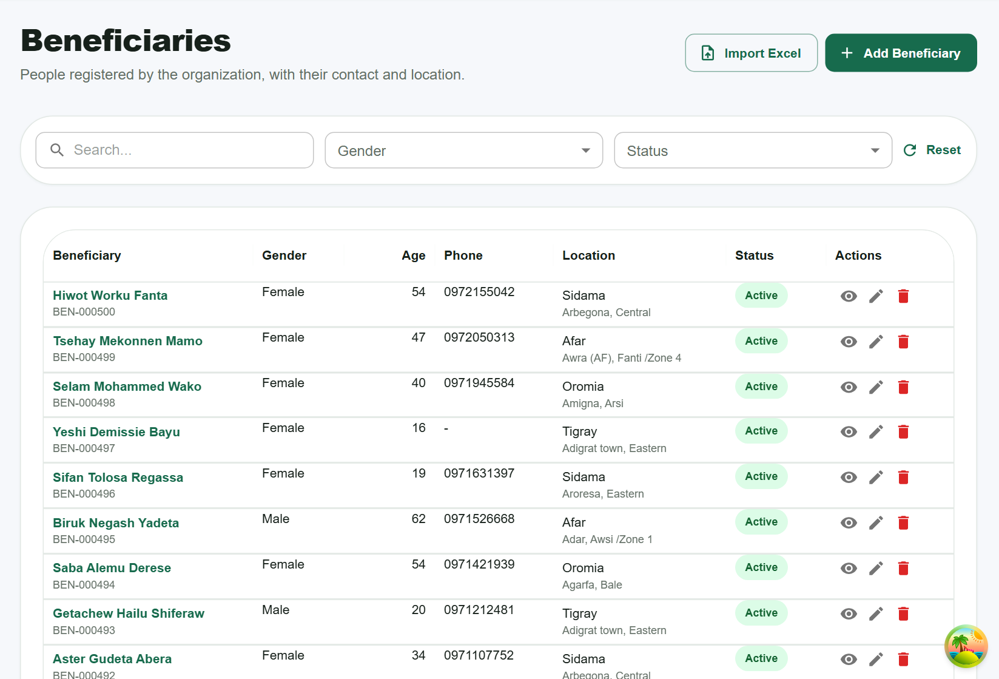
A list: search and filters on top, records below, actions on the right.
Forms
Fields marked * are required.
Lists that depend on each other open in order: choose the Program first, then its Project; choose the Region, then its Zone, then its Woreda.
If something is wrong, a message at the top says "Please check: …" and names the field and the problem.
Detail pages
A detail page shows everything about one record and the records linked to it (for example a project's phases,
activities and budget). Use Edit to change it and Back to return to the list.
Codes and history
The system gives every record a code automatically, for example BEN-000123 for a beneficiary or
PRG-000002-PRJ-003-ACT-001-RUN-002 for an activity run (the code shows where the run belongs). Use codes when you talk about a record.
Every change is saved immediately and recorded in the history, which shows who did what and when.
A record that others depend on cannot be deleted. For example, a project with activities cannot be deleted. The message tells you why.
4. How the work flows
Work in this order. Each step uses what the earlier steps created, so the right choices appear in the forms.
1 · Set upOrganization, users, roles, lookups, custom fields
4 · Do the workBeneficiaries, enrollments, attendance, service delivery, expenses
5 · ReportDashboard and reports
How records connect
Record
Belongs to
Example
Program
The organization
Women and Youth Livelihoods
Project
A program
Small Business Start-up Grants
Phase
A project (a phase works like a project of its own)
Community Water Points, Phase 2
Activity
A project
Business skills training
Activity run
An activity (one batch, place and dates)
Batch 2, Adigrat town
Attendance session
An activity run
Training session 1
Enrollment
A beneficiary and a program
Hiwot enrolled in Livelihoods
Service delivery
A program, and optionally a project, activity or run
Hygiene kits to 40 people
Donation
A donor; funds a program or project
USD 60,000 grant
Budget
A program or a project (or phase)
Phase 2 Budget, FY 2027
Expense
A line of an approved project budget
Venue hire, Training & Workshops
Statuses of work
Programs, projects, activities and activity runs all use the same five statuses:
Status
Meaning
What it allows
Planned
Not started yet
Everything (plans can be prepared)
Active
Running
Everything
Suspended
Paused
Nothing new until it is Active again
Completed
Finished
No new plans; late records (deliveries, attendance, expenses) are still allowed
Cancelled
Stopped
Nothing new; not counted in reports
The fiscal year is the calendar year: FY 2026 = 1 January to 31 December 2026.
Part B
Working with the modules
One chapter per menu item, in the order of the left menu.
5. Dashboard
Everyone
The dashboard opens after you sign in. It shows your organization's key figures at a glance:
beneficiaries, programs, donors, funding received (per currency), services delivered and their value,
followed by charts about beneficiaries (gender, age, location), programs and services.
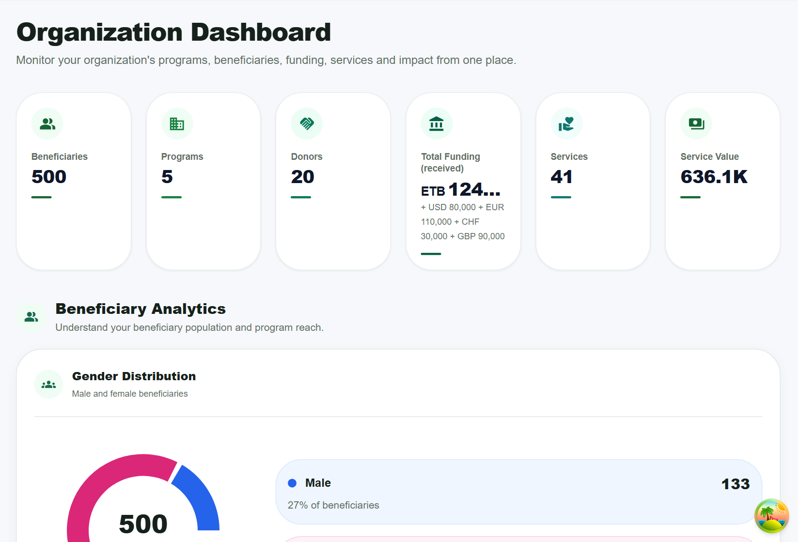
The organization dashboard.
The dashboard shows the current picture. For a chosen period, filters or an export, use Reports (chapter 20).
6. Beneficiaries
Admin · Data Entry (add and edit) · others view
The people your organization serves, with their personal, contact, location and vulnerability information.
A beneficiary is registered once and can then be enrolled in programs, take part in activities and receive services.
Add a beneficiary
Go to Beneficiaries › Beneficiaries and click Add Beneficiary.
Personal Information: First, Middle and Last Name, Gender, Date of Birth (the age is calculated for you) and Marital Status.
Contact Information: Phone, Alternative Phone, Email.
Address Information: Country, then Region › Zone › Woreda (each list opens after the previous one is chosen), Kebele and Address.
Socio Economic and Vulnerability Information: Education Level, Occupation, Person With Disability, Disability Type and Vulnerable Groups.
Custom Fields: any extra questions your organization added.
Click Save. The beneficiary gets a number such as BEN-000501.
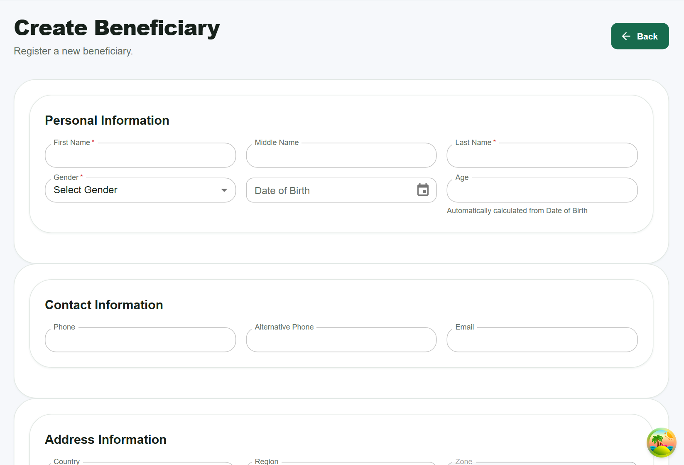
The beneficiary form.
Import many beneficiaries from Excel
On the beneficiary list click Import Excel, then Download Template.
Fill in one row per person. Use the official region, zone and woreda names. Do not type the age: it is calculated from the date of birth.
Upload the file (.xlsx, at most 10 MB). The system imports the correct rows and lists the rows with problems so you can fix and upload them again.
The beneficiary page
Open a beneficiary to see all their information: personal, contact, address, socio-economic, vulnerability,
custom fields and documents. Use Edit Beneficiary to change details. To see the programs, trainings and
services a person received, use the Beneficiaries report (chapter 20).
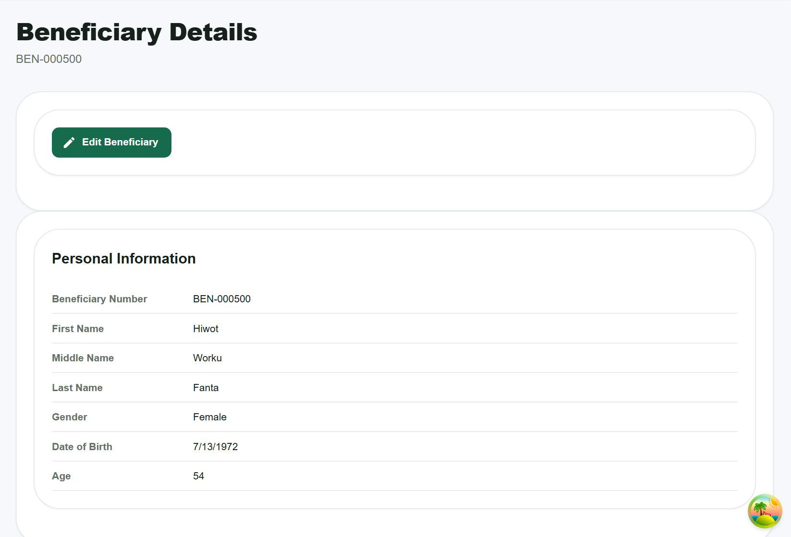
A beneficiary's page.
Status
Active: normal.
Inactive: the person has left (moved, passed away, no longer served). Their history stays, but they cannot be enrolled, receive services or be added to anything new.
7. Enrollments
Admin · Data Entry
An enrollment records that a beneficiary is part of a program, from a date, with a status.
Reports use enrollments to count the people enrolled in each program.
Enroll a beneficiary
Go to Beneficiaries › Enrollments and click Create Enrollment.
Choose the Beneficiary and the Program, and enter the Enrollment Date (inside the program's dates).
Set the Status and add Remarks if needed, then save.
Status
Use when
Pending
Selected but not started yet
Active
Taking part
Suspended
Paused for a while
Completed
Finished the program: enter the Completion Date
Dropped
Left before finishing: enter the Exit Reason
A person can be enrolled in a program only once, and only while the program is not Completed, Suspended or Cancelled.
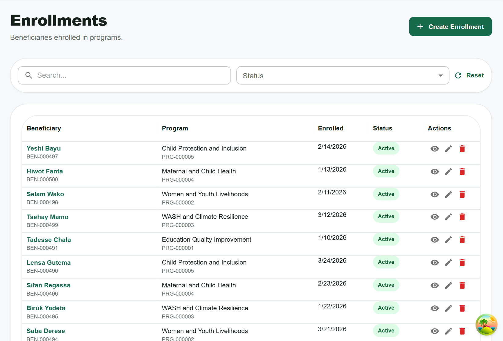
The enrollment list.
8. Enterprises and members
Admin · Data Entry
Enterprises are businesses, cooperatives and groups run by beneficiaries, for example a dairy cooperative
or a women's savings group. Their members are beneficiaries.
Add an enterprise
Go to Beneficiaries › Enterprises and click Add Enterprise.
Enter the Enterprise Name, Enterprise Type, Ownership Type, Business Sector, Business Status, Registration Number, Capital, Start Date, contact and location, then save.
Add members
Open the enterprise and use Add Enterprise Member in its Members table (or Enterprise Members in the menu).
Choose the Beneficiary, the Member Role (Member, Partner, Shareholder, Manager, Employee) and the Joined Date.
When a member leaves, edit the membership and enter the Left Date.
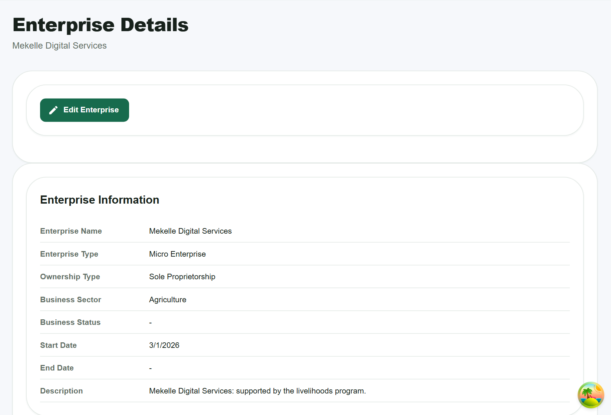
An enterprise with its members table.
An enterprise is Active or Inactive. No new members can be added to an inactive enterprise or from inactive beneficiaries.
9. Programs
Admin (others view)
A program is a large area of work, such as "WASH and Climate Resilience" or "Child Protection and Inclusion".
Projects, enrollments, service deliveries, donations and budgets all belong to a program.
Go to Programs › Programs and click Add Program.
Enter the Program Name, Category, Description and Target Beneficiaries.
Set the Start Date and End Date, and the Status (see chapter 4). Save.
The program page shows its projects, budget and spending, and the people it reached.
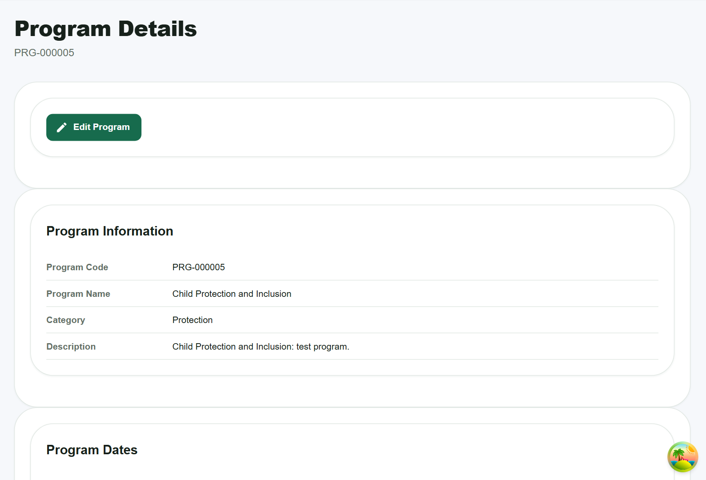
A program's page.
A program's dates cannot be shortened so that its projects or enrollments fall outside them.
10. Projects and phases
Admin · Data Entry
A project is a piece of work inside a program, usually with its own donor, manager, dates and budget.
Add a project
Go to Programs › Projects and click Add Project.
Choose the Program and enter the Project Name and Description. Choose the Donor and the Project Manager.
Enter the Start Date and End Date (inside the program's dates) and the Status. Save.
The project's money is not entered on this form. It is planned in Finance › Budgets (chapter 18) and then shows on the project page.
Projects in phases
When a project runs in phases (Phase 1 in 2026, Phase 2 in 2027 …), each phase is created as its own project linked to the main project:
Open the main project.
In the Phases card click Add Phase. Give it a name and dates inside the main project's dates.
Each phase then has its own activities, budget, deliveries and reports, just like a single project. The main project's page and reports add up all its phases.
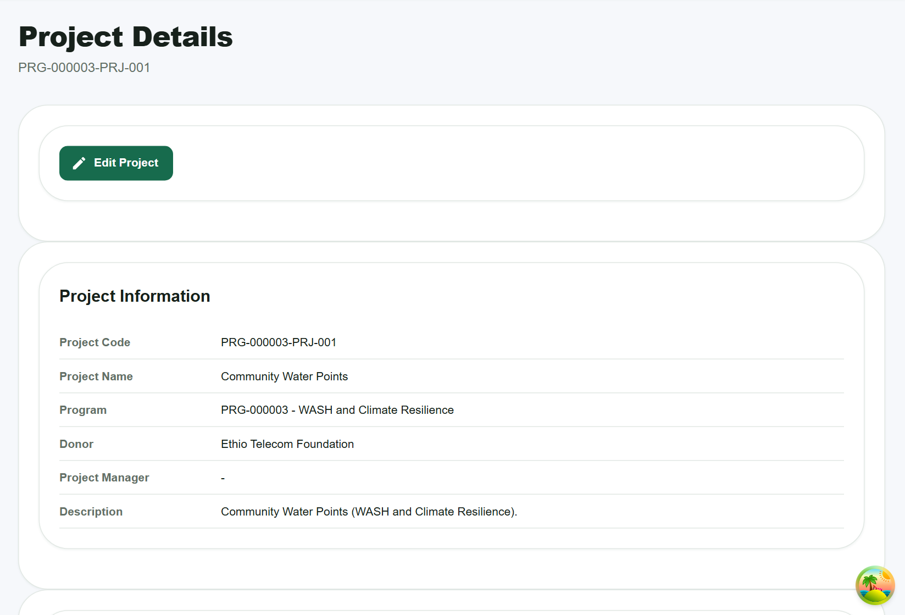
A project's page: information, phases, budget and activities.
11. Terms of Reference (TOR)
Data Entry writes · Admin approves
A TOR describes a planned activity or training before it happens: why, what, who, where, how and at what
cost. After approval, the activity can be created directly from it.
Write and submit a TOR
Go to Activities › Terms of Reference and click New TOR.
TOR Information: Title, Project, Activity Type, and an existing Activity or Activity Run if it is for one (usually left empty).
Purpose: Background, Objectives and Expected Outputs (all three are required before submitting).
Participants and Facilitators: who will attend, the expected number, and facilitators or resource persons.
Date and Venue: start and end dates, region, woreda and venue.
Methodology, Logistics and Reporting, and the Budget lines (description, amount, currency).
Save, then click Submit for Approval.
Approve
The approver opens the TOR and clicks Approve, or Return it with a comment. A returned TOR can be corrected and submitted again.
The Approval History shows who submitted and approved it and when. Use Download PDF to print or share it.
Create the activity from the TOR
On an approved TOR, click Create Activity from TOR. The activity is filled in from the TOR (name, type, project, dates, place).
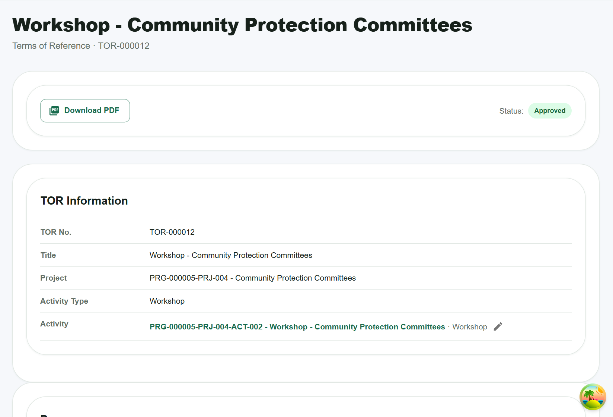
An approved TOR with its activity.
12. Activities
Admin (Data Entry through an approved TOR)
An activity is something a project does: a training, workshop, meeting, campaign, field visit,
assessment, distribution and so on. An activity can run several times (see Activity runs).
Go to Activities › Activities and click Create Activity (or create it from an approved TOR).
Activity Information: Project, Activity Name, Activity Type, Participant Source (enrolled beneficiaries, staff, partners, mixed …), Target Participants, Target Groups, Facilitator and the Terms of Reference.
Date and Location: Activity Date (inside the project's dates), Region, Woreda and Venue / Site.
Add a Description or Remarks, set the Status and save.
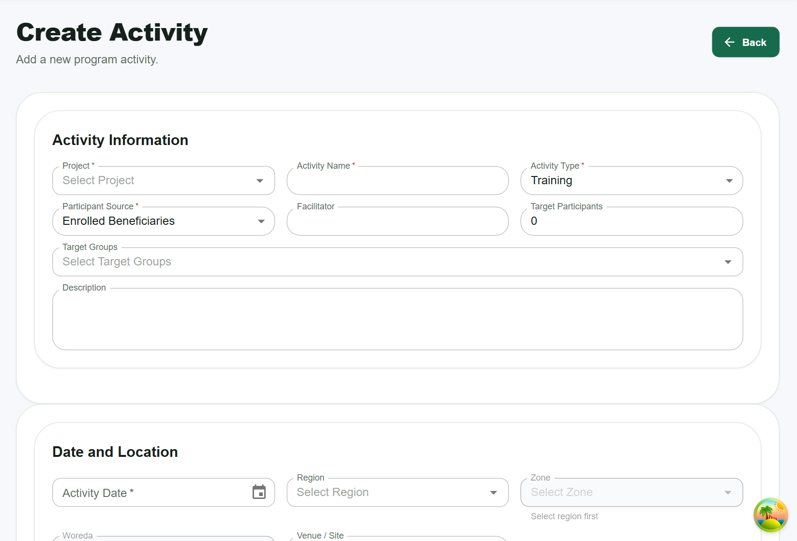
The activity form. The dates allowed by the project are shown under the date.
13. Activity runs
Admin · Data Entry
An activity run is one implementation of an activity: one batch, in one place, on certain dates. For example,
"Business skills training" may have Batch 1 in Adama and Batch 2 in Adigrat. Attendance is recorded per run.
Go to Activities › Activity Runs and click Create Activity Run.
Choose the Activity. Enter the Run Name, Trainer and Target Group.
Schedule and Location: Start Date and End Date (inside the project's dates), Region, Woreda and Venue / Site.
Add Notes, set the Status and save. The run gets a code such as …-ACT-001-RUN-002.
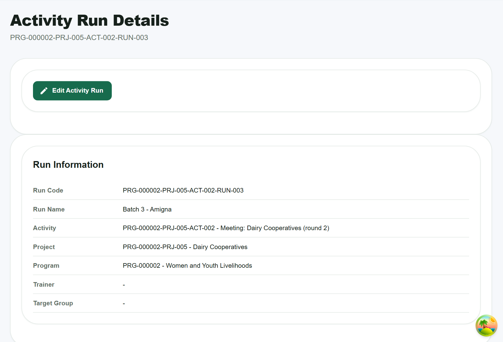
An activity run's page, with its sessions and attendance.
14. Attendance
Admin · Data Entry
Attendance records who took part in each session of an activity run. It feeds the reports on people trained,
completion and attendance rate.
Create a session
Go to Activities › Attendance and click Create Attendance.
Choose the Activity Run, enter the Session Number, Session Title and Session Date (inside the run's dates), and save.
Fill in the attendance sheet
Open the session's sheet (the sheet icon in the list).
With Beneficiary selected as the Participant Type, pick a person in Select Beneficiary and click Add. Repeat for each person.
To add others, choose their Participant Type (Staff, Board, Partner, Government, Community, Other), enter their name, gender, age group, organization, position and phone, and click Add.
In Attendance Records, set each person's status: Present, Late, Excused or Absent, then save. The totals at the top (participants, present, absent, late) update.
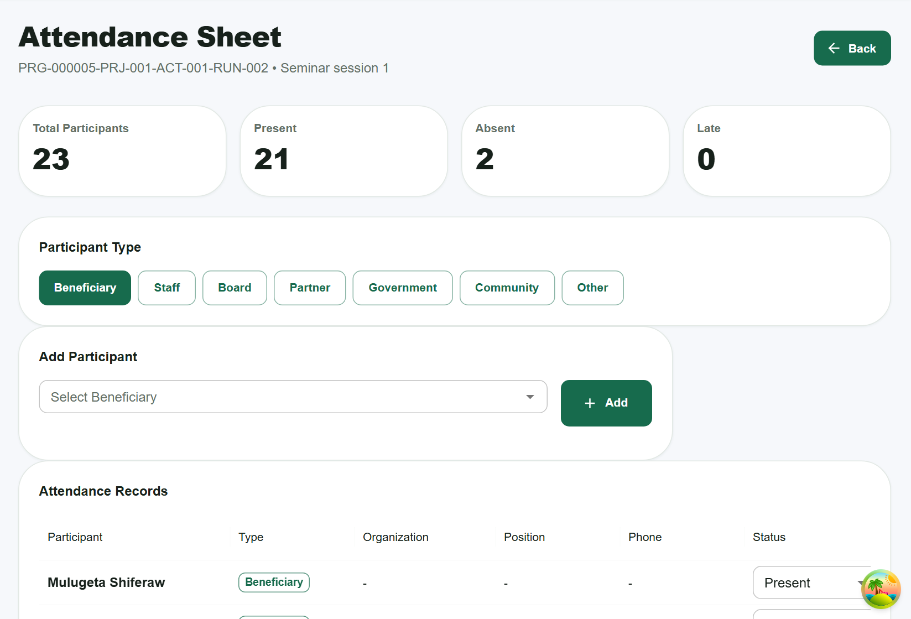
An attendance sheet with totals and participant types.
Two people editing the same sheet: if someone else saved the sheet after you opened it, your save is refused
so that their work is not overwritten. Reload the sheet and enter your changes again.
15. Service delivery
Admin · Data Entry
A service delivery records goods, cash or services given out: what, how much, to whom, where, when, and
which donation paid for it. Reports use it to count the people reached and the value delivered.
Who receives it
Recipient Type
Allocation
Example
Individual
Individual: each person's own quantity is entered. Shared: the total is shared equally by the people chosen.
Hygiene kits to 20 women; a training shared by its participants
Household
To the household as a whole
Food package per household
Group / Community
To the group as a whole
Water point for a community
Institution
To the institution as a whole
Furniture for a school or health post
Record a delivery
Go to Services › Service Delivery and click Create Service Delivery.
Choose the Recipient Type and Allocation Method, then the Program and, if it belongs to them, the Project, Activity and Activity Run.
Choose the Beneficiaries (or the household, group or institution) and the Service Delivery Date.
Delivery Location: Region › Zone › Woreda and Venue / Site.
Service Items: for each item, the Service Category, Service Type, item, Unit, Quantity, Unit Cost and Currency. Add details (for example what a kit contains) if needed.
Funding: choose the Donation that paid for each item. If the item was bought with an expense, choose it in Bought with expense so that the cost is not counted twice.
Check the allocation per person and save.
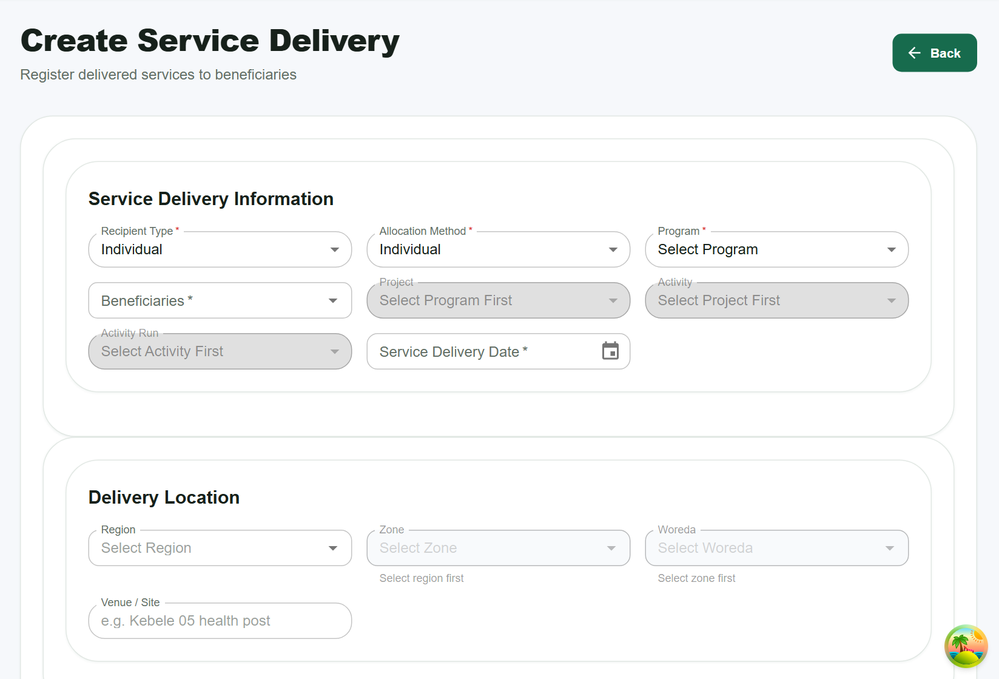
The service delivery form.
The delivery page
Shows the overview (people reached, value), the items, how they were allocated to each person, and the donations and expenses that paid for them.
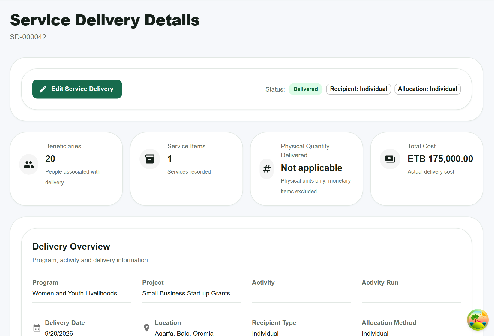
A delivery's page.
Only services allowed for the chosen recipient type are offered (set by the administrator in Lookups).
Inactive beneficiaries and suspended or cancelled programs, projects and activities cannot receive new deliveries.
A delivery that did not happen should be set to Cancelled; it is then left out of the reports.
16. Donors
Admin · Finance Officer
Donors and funding partners: governments, foundations, NGOs, companies and individuals.
Donor Dates: Donor Since, Last Contact Date, Next Follow-up Date, and Notes.
Reporting and Privacy: tick Share beneficiary names with this donor only if the donor may see names. Otherwise they see numbers only.
Share results with a donor (share link)
On the donor's page you can create a private link that lets the donor see where their donations went
(people reached, places, services), without an account. Choose all donations or one, and how long the link is
valid (90 days recommended). You can revoke a link at any time, and the page shows when it was last viewed.
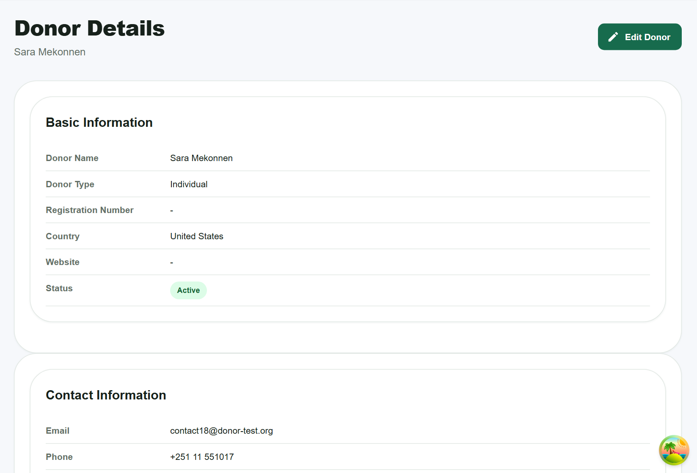
A donor's page.
17. Donations
Admin · Finance Officer · Data Entry (add)
Money and in-kind support received or promised by donors, and what each donation is allocated to.
Record a donation
Go to Funding › Donations and click Add Donation.
Choose the Donor and enter the Donation Title, Donation Type (Cash, Bank Transfer, Material, Equipment, Service, Other), Funding Source and Funding Restriction (Restricted or Unrestricted).
Enter the Amount, Currency and Donation Date. For a currency other than ETB, also enter the Exchange rate when received.
Choose the Program and, if any, the Project it funds, and enter the Receipt Number and Reference Number.
Set the Status: Pledged (promised), Received, or Cancelled. Save.
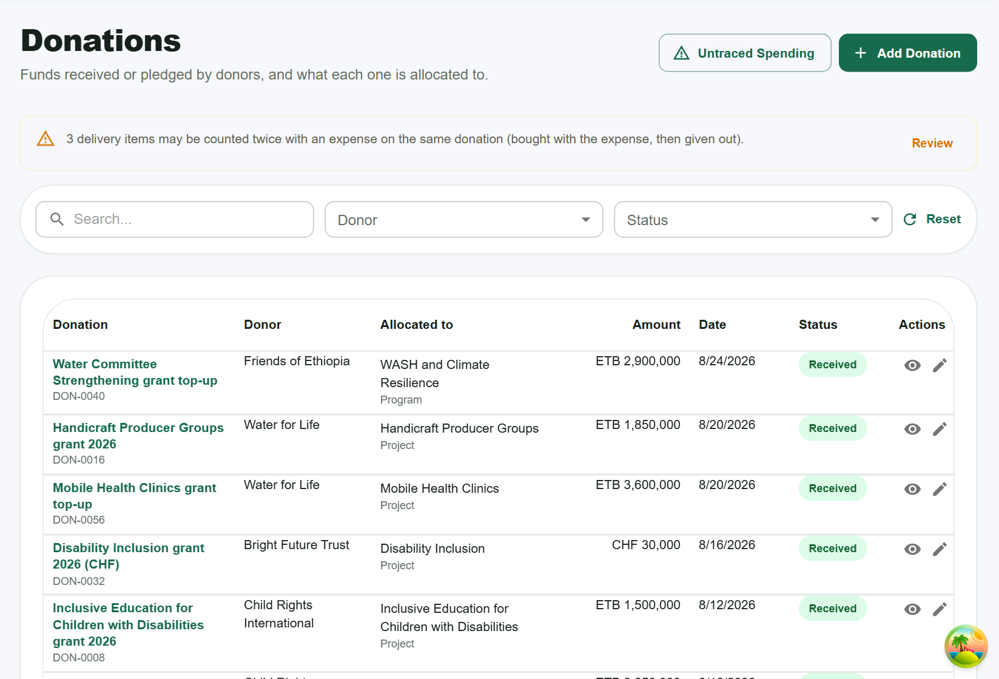
The donation list, with a warning about possible double counting.
Where the donation went
Open a donation and click Where Did It Go? to see what it paid for: expenses, items given out, places and
people reached, and how much is left. For a foreign currency it also shows the value in ETB (received, used,
exchange gain or loss). Download Donor Statement gives a PDF for the donor.
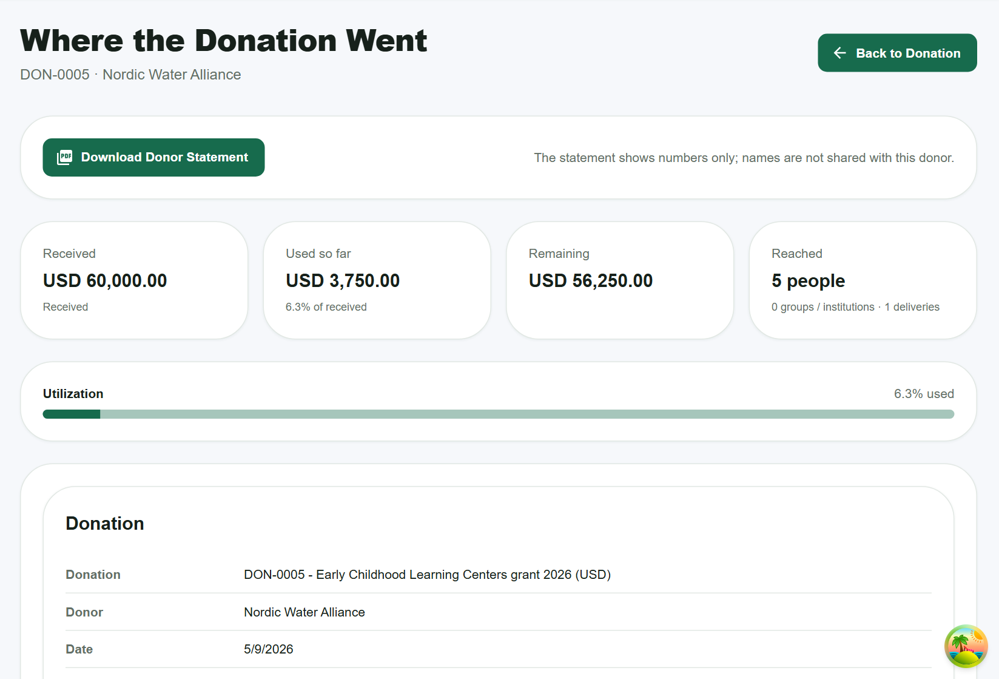
"Where the donation went": received, used, remaining, people reached.
Possible double counting: when items were given out and an expense on the same donation has about the same amount
but they are not linked, the list shows a warning. Open it and link the items to the expense, or confirm they are different.
Untraced spending lists deliveries that are not linked to any donation.
18. Budgets
Admin · Finance Officer
Budgets plan the money per year and per cost category. A program budget sets the total per year;
project budgets plan the details and draw on their program's budget. Expenses are charged to the lines of approved project budgets.
Create a budget
Go to Finance › Budgets and click New Budget.
Choose Project budget or Program budget, then the project or program, the Budget name, the Currency and the Period (From FY … To FY …; one or several years).
Budget Lines: for each line, the Category (Personnel, Training & Workshops, Travel & Per Diem, Direct Beneficiary Support, Supplies & Materials, Equipment, Consultancy & Services, Administration & Overhead, Other), a description and the amount for each year.
Totals shown in red go over what is left in the program budget. Save.
Click Submit for Approval. The budget is locked while it is reviewed, and the approvers are notified.
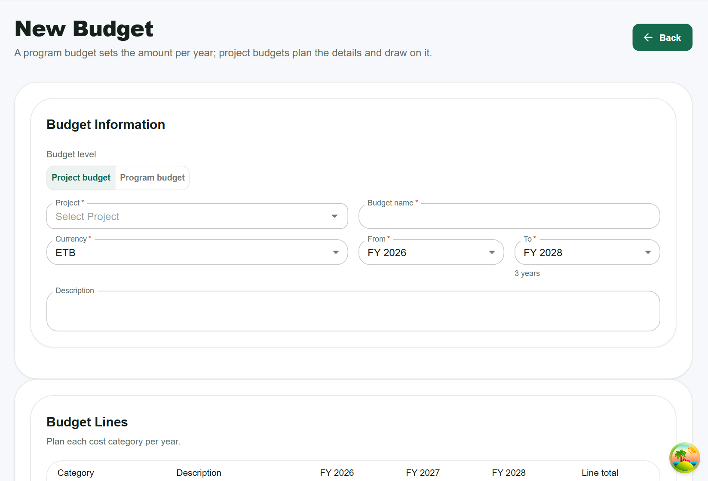
A new budget with its lines per year.
Approve or return
A finance officer or admin opens the budget and clicks Approve, or Return it with a comment. A returned budget can be corrected and submitted again.
Change an approved budget (revision)
Open the approved budget and start a revision.
Change the figures and give the Reason for this revision (what changed and why).
Click Submit Revision. Once approved, the old figures are kept as a version in the History, and expenses stay attached. Cancel Revision discards the proposal.
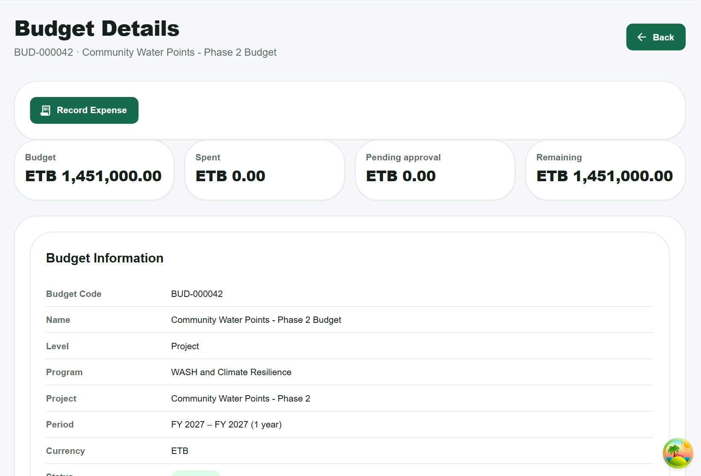
A budget: budget, spent, pending and remaining.
Spent = approved expenses. Pending = expenses recorded but not yet approved (not deducted yet). For a project in phases, each phase has its own budget.
19. Expenses
Data Entry / Finance record · Finance Officer / Admin approve
Actual spending, charged to a line of an approved project budget and, if known, paid from a donation.
Record an expense
Go to Finance › Expenses and click Record Expense.
Charge To: choose the approved Project budget, the Expense date (its fiscal year is shown) and the Budget line.
Expense Details: Description, Paid to (payee), Amount, Currency, Payment method (Cash, Bank Transfer, Cheque, Mobile Money, Other) and Receipt / invoice no.
Links (optional): the Activity it was for, and the donation it was Paid from.
Save, then Submit for Approval.
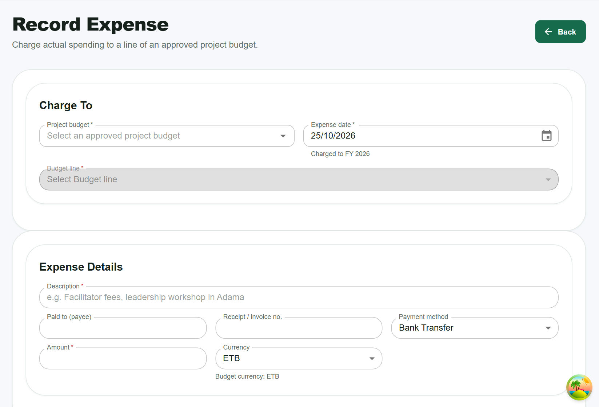
Recording an expense.
Approve, return or void
Approve Expense: it now counts as spent on the budget line and is locked.
Return for Changes: it goes back to the person who recorded it.
Over budget: if the line would go over budget, the form warns you. It can still be submitted, but the approver must click Approve over budget and give a reason.
Void Expense: cancels an approved expense that was wrong (with a reason). It then no longer counts as spent but stays in the history.
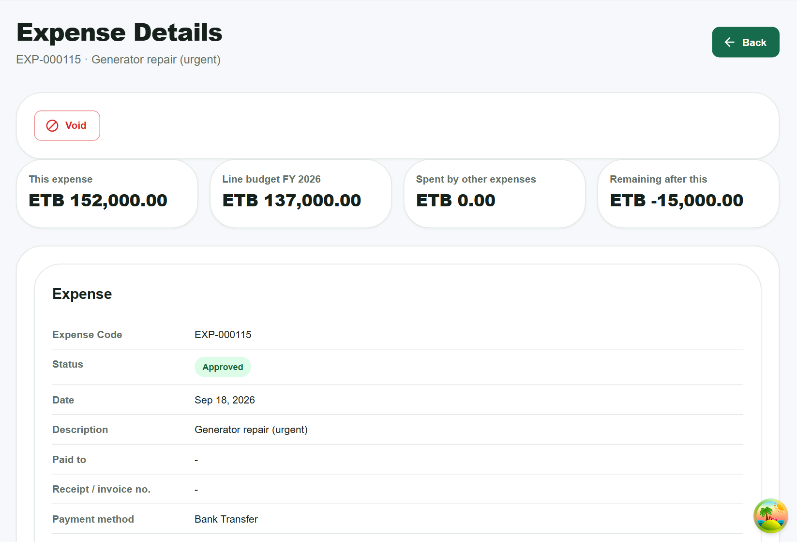
An expense with its effect on the budget line.
20. Reports
Everyone (money figures only for roles that may see finance)
Ready-made reports for any period, with filters, charts, and Excel, PDF or CSV export.
Report
Shows
Organization overview
The period at a glance: people, programs, activities, services, enterprises, funding and spending
Beneficiaries
Who you serve: gender, age, location, programs, and what each person received
Programs & projects
Each program and project: people reached, what was delivered, funding, budget and spending
Activities & training
Trainings (people trained, completion, attendance) and other activities (what they delivered and to whom)
Service delivery
Goods, cash and services delivered: where, to whom, people reached, who paid
Enterprises
Enterprises, their members, and the support members received
Donors & funding
Donors and donations: received, pledged, what each paid for and who it reached
Budget & spending
Approved budgets against spending: by budget, category, donor and month; lines over budget
Run a report
Go to Reports and click a report card.
Choose the Period: year (Jan–Dec), half year, quarter, month, date range, or all time.
Add filters if offered: program, project, region, gender, status.
Click any row to open that record's full report (for example one project).
Download with Excel, PDF or CSV.
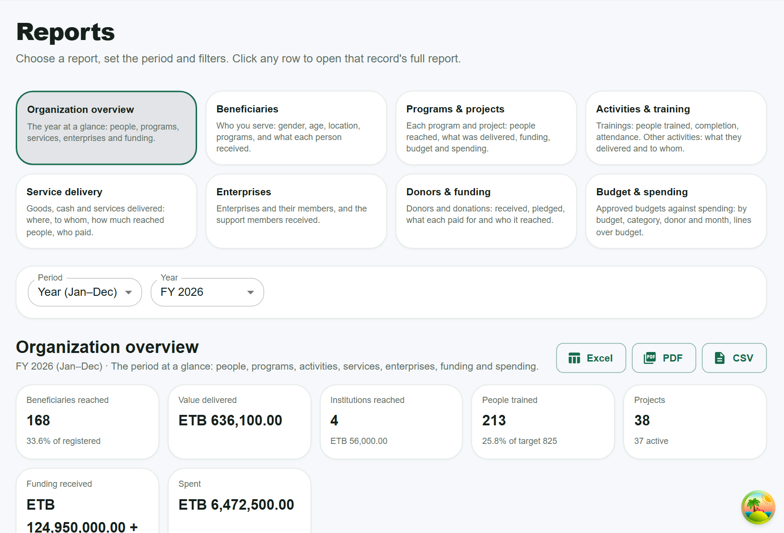
The report center with the organization overview.
The report address in the browser keeps the period and filters, so you can bookmark a report or send its link to a colleague who has access.
Part C
Administration
For organization administrators. These pages are under Administration in the menu.
21. Organization settings
Organization Admin
Administration › Organization holds your organization's details: Basic Information (name,
type, description, founded year), Legal Information (legal name, registration and tax numbers), Contact Information,
Primary Contact Person, Address, and Branding (logo). Keep them up to date: they appear on reports and statements.
22. Users
Organization Admin
Go to Administration › User Management and click Create User.
Enter the Full Name, Email and Role, and a First password that follows the rules in chapter 2.
Give the person their email and that first password. At their first sign-in they must choose their own, so only they know it.
A user forgot their password: use Reset password. The system creates a temporary password (use Copy to copy it), and the user chooses a new one at their next sign-in. Users cannot change their password themselves after the first sign-in.
An administrator forgot theirs: another administrator of the organization, or the platform administrator, resets it.
Locked users (too many wrong passwords) unlock after 15 minutes, or when you reset their password.
Deactivate User when someone leaves: they can no longer sign in, but their work stays in the records and history.
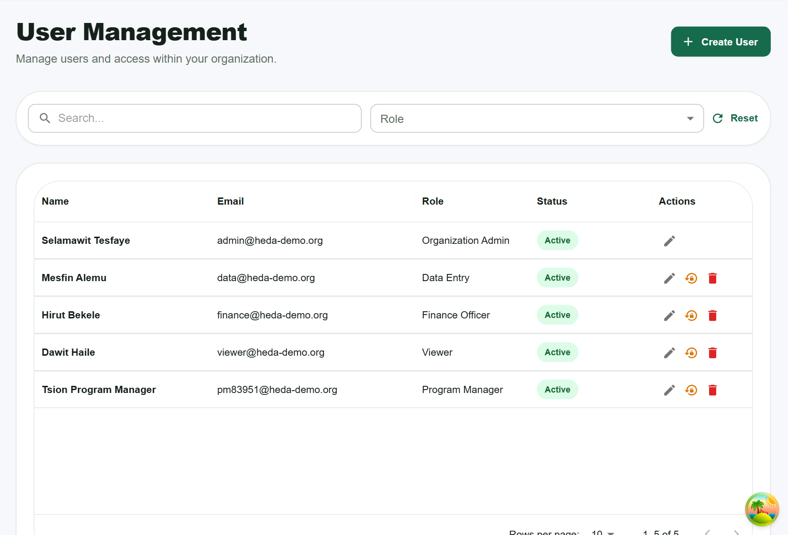
User management.
23. Roles
Organization Admin
The four built-in roles (chapter 2) cannot be changed. If your organization needs different rights, make your own roles:
Go to Administration › Roles and click New Role, or Copy as new role next to a built-in role to start from it.
Give the Role name (for example "Program Manager" or "M&E Officer") and a Description.
Tick the permissions per module: view, add, edit, delete, approve.
Save, then give the role to users in User Management.
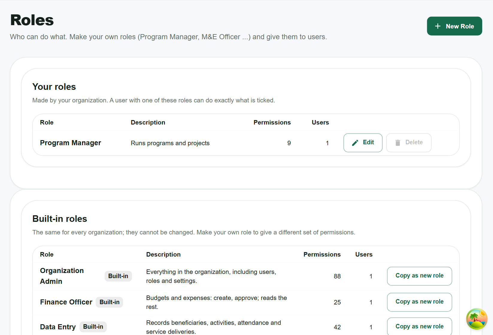
Your roles and the built-in roles.
24. Wording
Organization Admin
Administration › Wording lets your organization use its own words. For example,
"Fund" instead of "Donation", "Administrator" instead of "Organization Admin", or "Ongoing" instead of the status "Active".
Type your word (and its plural) next to the term. Leave the box empty to keep the default.
Check the Preview, then click Save Wording. Menus, pages, forms, reports and exports use the new words at once.
Default returns a term to its original word.
Only words are changed, never your data. Renaming a status changes only how it is shown; its meaning and rules stay the same.
25. Lookups
Organization Admin
Administration › Lookup Management holds the choices that appear in drop-down lists, by
module and category: gender, education level, occupation, disability type, service categories and service types,
items and units, and so on.
Open a module and category and click Manage, or click Add Lookup.
Enter the Value (and a Code if you use one). Codes must be unique.
For service types, also set Can be given to (individuals, households, groups, institutions), the Allowed Units and the Allocation Behavior.
A value that is no longer used can be deactivated. It disappears from new forms but stays on old records.
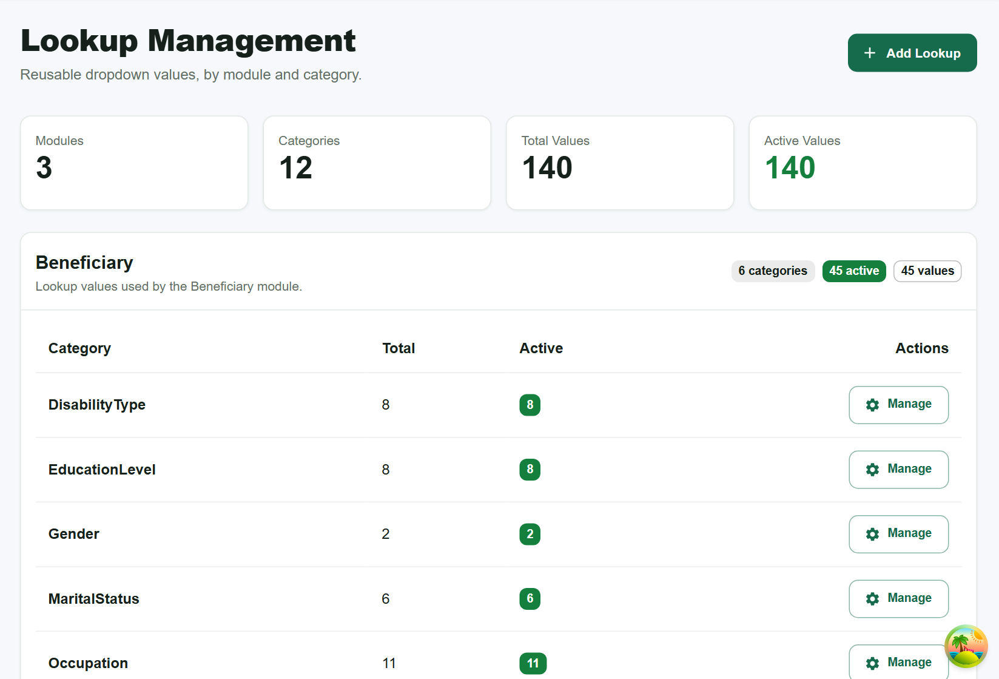
Lookup management.
26. Custom fields
Organization Admin
Administration › Custom Fields adds extra questions to the standard forms, for example
"Household size" or "Mobile money user" on the beneficiary form.
Click Create Custom Field. Choose the Module (Beneficiary, Donor, Program, Service Delivery, User, Enterprise, Enterprise Member).
Enter the Field Label (what users see) and Field Key (a short internal name), and choose the Field Type (text, number, date, a list of choices …).
Tick Required field if it must be filled in, and Active field to show it. Save.
Appendix A: Statuses
Records
Statuses
Programs, projects, activities, runs
Planned → Active → Completed, or Suspended / Cancelled (see chapter 4)
Custom roles can be given approval rights too. Approvers get a notification (the bell) when something waits for them.
Appendix C: Rules the system checks
Dates: an end date is never before its start date. Records stay inside their parent's dates: a project inside its program, an activity and its runs inside the project, a session inside its run, an enrollment inside the program, a membership inside the enterprise's dates. A parent's dates cannot be shortened past its records. Work that is already done cannot be dated in the future.
Status: see chapter 4 and Appendix A.
Money: expenses only go to approved project budgets. A project budget cannot exceed what is left in its program budget. Items bought with an expense are not charged to the donation a second time.
Duplicates: a person is enrolled in a program only once. Lookup codes are unique.
Appendix D: Currencies
The system works in ETB, USD, EUR, GBP and CHF. Each amount keeps its own currency. Totals are shown
per currency (for example "ETB 124,950,000 + USD 80,000"). For a donation in a foreign currency, the exchange rate on the day it was
received is recorded, so reports can also show its value in ETB, the value of what was used, and the exchange gain or loss.
Appendix E: Common messages
Message
What to do
"Please check: …"
A field is missing or wrong. The message names it. Correct it and save again.
"… is Completed / Suspended / Cancelled"
The program, project or activity no longer accepts this kind of record. Change its status if the work continues.
"… is Inactive …"
The beneficiary, donor or enterprise is inactive. Make it Active if appropriate.
Date outside the project's dates
Use a date inside the dates shown, or ask an admin to extend the parent's dates.
Cannot be deleted
Other records depend on it. Delete or move those first, or set the record to Inactive or Cancelled instead.
Someone else saved the sheet
Reload the page and enter your changes again.
Account locked
Wait 15 minutes or ask your administrator to reset your password.
Appendix F: Glossary
Term
Meaning
Beneficiary
A person the organization serves
Enrollment
A beneficiary's membership in a program
Enterprise
A business, cooperative or group run by beneficiaries
Program / Project / Phase
Area of work / piece of work in a program / stage of a project
TOR
Terms of Reference: the plan of an activity, approved before it happens
Activity / Activity run
What is done / one batch of it, at one place and time
Session
One day or meeting of an activity run, with attendance
Service delivery
Goods, cash or services given out
Pledged / Received
Promised by a donor / actually received
Budget line
One cost category and its amount per year in a budget
Revision
An approved change to an approved budget, with its reason
Void
Cancel an approved expense while keeping its history
Lookup
A choice in a drop-down list, managed by the administrator